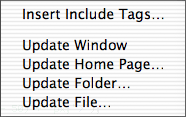
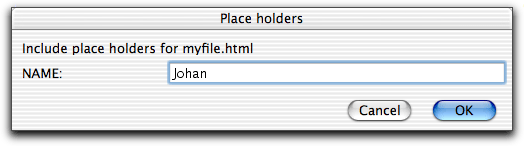

 The menu contains functions to dynamically include files in your document. Let's say you have a document where one part contains information which is updated frequently while the rest is almost never changed. You can let the part which changes often be in another file and insert 'include tags' in the original document. As another example, let's say some information is used in more than one document, perhaps if you make two versions of your home page, one with frames and one without. You can then have this information in a separate file and and insert 'include tags' in the other ones. In this way you only have to make a change at one place. You can later quickly update your files and replace the text between the 'include tags'.
Exactly how the include tags look like is explained below, but an example is
<!-- #INCLUDE INCLPATH="myfile.html" --> content of myfile.html will go here <!-- /#INCLUDE -->
When you define a home page folder, you can also define an include folder for it, where you can put all the 'include files'. Although you can put the include files anywhere you like, the include folder has certain advantages when the include files contain links. When Alpha inserts the include file it automatically builds the relative links for you. To see what I mean, consider the following example:
This feature lets you include the same file in many files in different places in the folder hierarchy, without having to worry about that the links are correct. Alpha takes care of that for you.
Recursive including of files is possible. You can include another file in include.html, which in turn includes another file, which includes another file...
A few of other things:
The include file can contain place holders for arbitrary text - and even scripts - which is defined by attributes of the include tags. Let us illustrate this with an example, where we have an include file myfile.html with the content:
My name is ##NAME##.
##NAME## is the place holder and will be replaced when the file is included in another document. A place holder begins and ends with ## and the text in between is the attribute name which will be used in the include tag. The name is case insensitive.
An example of include tags which uses this include file is:
<!-- #INCLUDE INCLPATH="myfile.html" NAME="Johan" --> My name is Johan. <!-- /#INCLUDE -->
In this example the place holder ##NAME## was replaced by a text string. It is also possible to use Tcl scripts. Even if you do not know Tcl or do not plan to use scripts in the include tags there is still one technical detail you must be aware of. In order for Alpha to be able to always interpret your text string as text and not as a script, some characters have to be preceded by a \ character. These are $, [, ], and \. To illustrate this consider a case where the place holder ##NAME## should be replaced by "J$h[a]n\s". Then the NAME attribute must be
NAME="J\$h\[a\]n\\s"
As mentioned above you can also use scripts as attribute values for the place holders. In fact, the attribute value can be a combination of text and scripts. What Alpha does is to take the attribute value and apply the command subst to it. Subst does variable, command, and backslash substitution of its argument. To illustrate how subst works let us say you have defined a variable myname by
set myname Johan
and a Tcl proc myproc by
proc myproc {} { return Johan }
then
subst $myname
returns "Johan" which also
subst [myproc]
does.
You can combine text, variables, and commands in any way you like in the attribute value like in this example:
<!-- #INCLUDE INCLPATH="myfile.html" NAME="$myname and he is another [myproc]" --> My name is Johan and he is another Johan. <!-- /#INCLUDE -->
Included file is in the include folder:
<!-- #INCLUDE INCLPATH="path to file relative to include folder" --> content of file <!-- /#INCLUDE -->
Included file is somewhere else on the same disk.
<!-- #INCLUDE PATH="relative path to file" --> content of file <!-- /#INCLUDE -->
Included file is on another disk.
<!-- #INCLUDE FILE="path to file" --> content of file <!-- /#INCLUDE -->
Depending on your preferences, the content of the file may not be inserted until you update the window.
If the path contains any of the characters <">#,
they are translated like
# -> #;
< -> #lt;
> -> #gt;
" -> #qt;
in order to make the tag unambiguous.
When using to include files with place holders, Alpha scans the file to include and opens a dialog box where you can specify the values of the place holders.

The include tags with the attributes for the place holders are then inserted.
If you change the content of the included file, you can quickly update your documents with the update functions below.
If you write anything between the 'include tags', it is only a temporary change. The next time you update your document everything between the tags is replaced.
If you remove 'include tags' in a document, make sure you remove both the opening tag and the corresponding closing tag.
If a file contains 'last modified date' tags, the date is changed if the file has been modified.